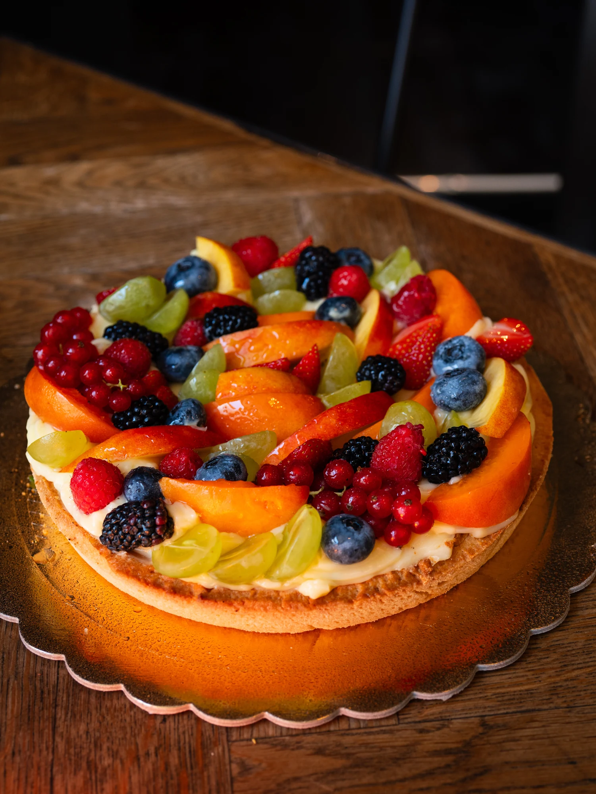
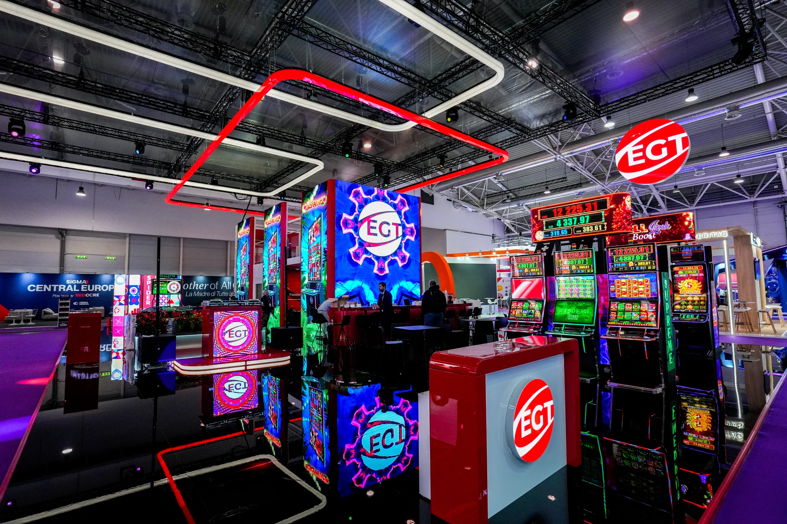
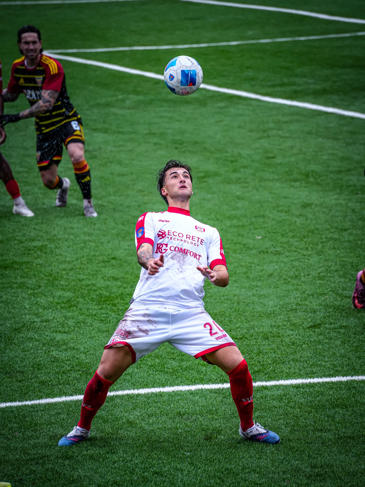
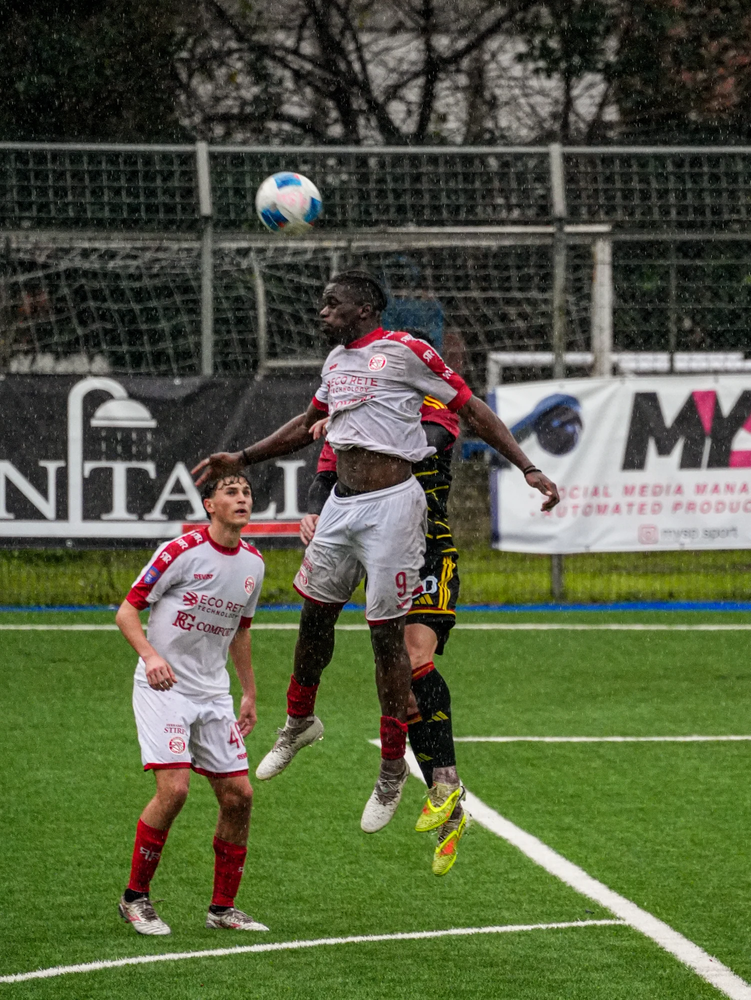
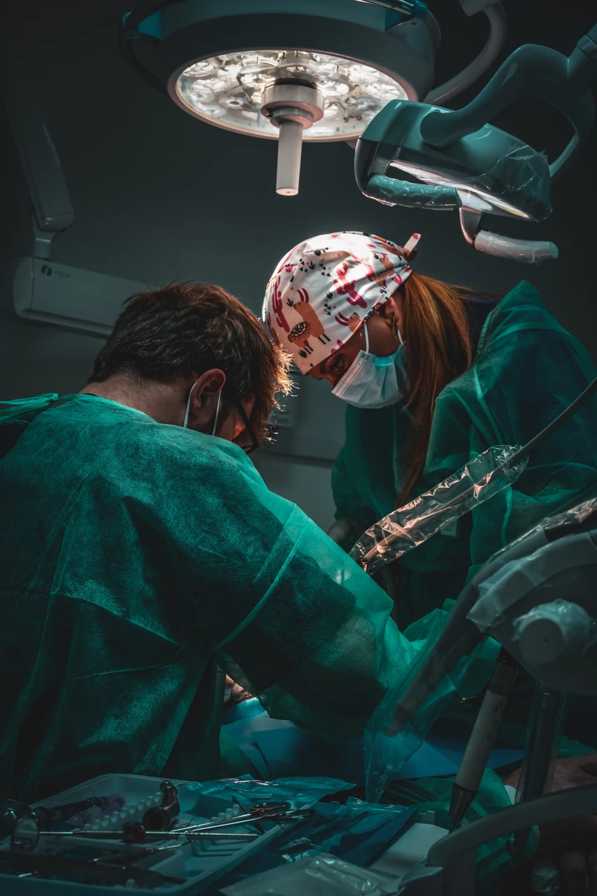
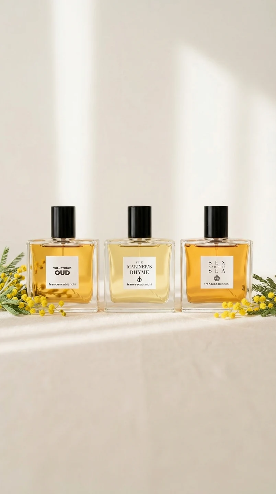
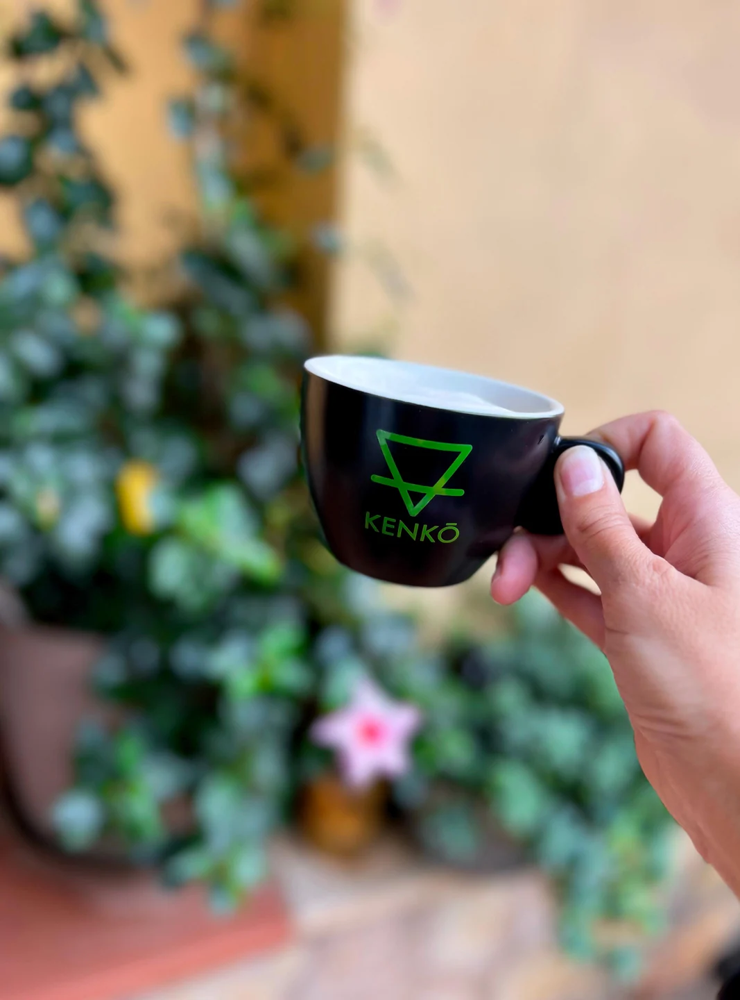

Video non disponibile. Riprova tra poco.
STRATEGIA. FOTO. VIDEO.
Contenuti

scalano
i
social

Strategy

Community, feed
e impatto.

[ 03 / SOCIAL VIDEO ]
Sport. Persone. Brand.
Storie pensate per il feed.
FILMOGRAFIA
Video non disponibile. Riprova tra poco.
Video non disponibile. Riprova tra poco.
Video non disponibile. Riprova tra poco.
Video non disponibile. Riprova tra poco.
Pianificazione creativa, scouting location e tutto ciò che serve prima di scattare il primo frame.
Riprese video 4K con Sony Alpha 7 IV in S-Log3 / S-Gamut3.Cine, per conservare dettaglio e lavorare sul colore in post-produzione.
Ogni video prende forma in DaVinci Resolve: dal montaggio alla color correction, fino al color grading e alla consegna finale.
Anni di esperienza
Clienti seguiti
Progetti realizzati
Sono Samuel Perri.
Unisco strategia social, fotografia e video per dare ai brand una presenza riconoscibile.
Da quattro anni trasformo idee e obiettivi in contenuti. Nel tempo mi sono specializzato nella comunicazione medica, oggi al centro del mio lavoro: affianco medici e strutture sanitarie con immagini chiare, curate e attente al contesto. Lo stesso approccio accompagna i progetti per sport, aziende, ristorazione ed eventi. Seguo ogni fase, dalla strategia alla produzione, fino al montaggio e alla pubblicazione.
Sono Samuel Perri.
Creo foto, video e strategie social per i brand.
Da quattro anni racconto persone e attività, soprattutto nel settore medico. Lavoro anche con sport, aziende, ristoranti ed eventi.
Costruiamo qualcosa insieme ↗CLIENTI & PROGETTI

Comunicazione sanitaria
Fotografia e contenuti social.
Chirurgia ortopedica
Ritratti, video e comunicazione social.

Profumeria
Visual di campagna e video.

Food & lifestyle
Fotografia e contenuti per il brand.
Produzione di contenuti sportivi: piani editoriali, fotografia e video per raccontare il campo e la sua community.
Produzione video, interviste e contenuti social per rendere chiara la comunicazione specialistica.
Piani editoriali, brand identity e campagne digitali per la comunicazione di un centro medico.
Le tempistiche vengono concordate nel preventivo, in base al numero di contenuti e alla complessità della produzione.
Partiamo dall’identità del brand, dal pubblico e dall’obiettivo. Da qui definiamo formati, produzione e distribuzione.
Mi racconti la tua idea; definiamo insieme obiettivi, attività e un preventivo su misura.
Formati e file da consegnare vengono definiti insieme prima della produzione.
Gli utilizzi dei contenuti vengono concordati in base ai canali e alle esigenze del progetto.